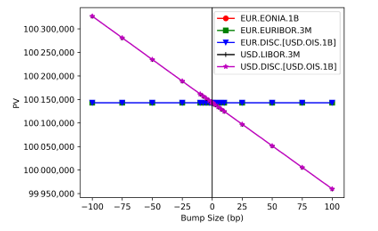
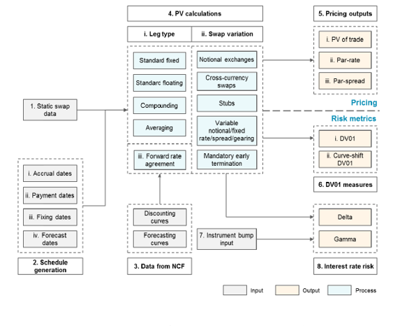

1.5.1.4.1.2. Scope#
1.5.1.4.1.2.1. Model Objectives and Comprehensive Usage Framework#

1.5.1.4.1.2.1.1. 🎯 Model Objectives and Intended Usage#
1.5.1.4.1.2.1.1.1. 📊 Comprehensive Scope Overview#
This comprehensive framework details the pricing, valuation, and risk management of diverse linear interest rate swaps. The swap analytics are deterministic relative to market data (i.e., curves) and represent the structural mechanics of swaps with institutional-grade precision.
1.5.1.4.1.2.1.1.2. 🎪 Framework Characteristics#
Aspect |
Approach |
Business Benefit |
Technical Advantage |
|---|---|---|---|
Pricing Methodology |
Simple arithmetic of components |
Transparent valuation |
Mathematical precision |
Valuation Framework |
Deterministic cash flow mechanics |
Reliable mark-to-market |
Regulatory compliance |
Risk Analytics |
Structural swap mechanics |
Comprehensive risk control |
Real-time sensitivity |
The framework explains swap pricing components, common analytics, and payoffs of various swap types, with scope limited to linear swaps that do not require convexity adjustments due to volatility, ensuring optimal performance and reliability.
1.5.1.4.1.2.1.2. 🎛️ Enterprise-Grade Swap Pricing Architecture#
namespace xsigma {
/**
* @brief Base class for all swap instruments with institutional-grade capabilities
*
* This comprehensive swap framework provides deterministic pricing, valuation,
* and risk management for linear interest rate derivatives with enterprise-grade
* performance and reliability for institutional trading operations.
*/
class swap_instrument : public priceable {
public:
/**
* @brief Common interface for all swap types with flexible output
*
* @param market Precomputed market data container with curve information
* @param output_type Pricing output specification (PV, par rate, etc.)
* @return Calculated value according to output type specification
*/
virtual double price(const any_container_precomputed& market,
option_output_enum output_type) const = 0;
/**
* @brief Deterministic cash flow calculation for all swap legs
*
* @param market Market data container with complete curve information
* @return Vector of cash flows with dates, amounts, and currencies
*/
virtual std::vector<CashFlow> calculate_cash_flows(
const any_container_precomputed& market) const = 0;
/**
* @brief Comprehensive risk metrics extraction for portfolio management
*
* @param market Market data container for sensitivity calculations
* @return Complete risk metrics including DV01, curve sensitivities
*/
virtual RiskMetrics calculate_risk_metrics(
const any_container_precomputed& market) const = 0;
};
// Gestionnaire de pricing pour différents types de swaps
class SwapPricingEngine {
public:
// Pricing déterministe basé sur les courbes
template<typename SwapType>
PricingResult price_swap(
const SwapType& swap,
const any_container_precomputed& market_data) {
PricingResult result;
// Calcul PV principal
result.present_value = swap.price(market_data, option_output_enum::PV);
// Calcul du taux par (si applicable)
if constexpr (std::is_same_v<SwapType, ir_swap>) {
result.par_rate = swap.price(market_data, option_output_enum::PAR);
}
// Calcul des sensibilités
result.dv01 = calculate_dv01(swap, market_data);
result.risk_metrics = swap.calculate_risk_metrics(market_data);
return result;
}
private:
double calculate_dv01(const swap_instrument& swap,
const any_container_precomputed& market_data);
};
}
Cette implémentation C++ dans Our project fournit l’architecture de base pour le pricing déterministe de swaps avec interface commune et calculs mécaniques.
1.5.1.4.1.2.1.3. Composants Couverts#
1.5.1.4.1.2.1.3.1. Analytics de Swap#
Composants de pricing : Décomposition des éléments de valorisation
Analytics communes : Métriques standards utilisées dans l’industrie
Pay-offs : Structures de paiement pour différents types de swaps
1.5.1.4.1.2.1.3.2. Limitation aux Swaps Linéaires#
Exclusion de convexité : Pas d’ajustements dus à la volatilité
Calculs mécaniques : Basés sur l’arithmétique simple des composants
Déterminisme : Résultats entièrement déterminés par les données de marché
1.5.1.4.1.2.2. Solidité Conceptuelle#
1.5.1.4.1.2.2.1. Fondements Analytiques#
Les analytics de swap linéaire reposent sur la structure du payoff du swap, qui est détaillée dans la confirmation de trade du swap. La term sheet inclut des spécificités telles que les périodes d’accrual, les dates de fixing, les dates de paiement, et le taux d’intérêt observable à payer à chaque date de paiement.
// Implémentation Our project de la structure de confirmation de trade
namespace xsigma {
struct SwapTradeConfirmation {
// Informations de base du trade
datetime effective_date;
datetime maturity_date;
double notional_amount;
currency trade_currency;
// Spécifications des jambes
struct LegSpecification {
frequency payment_frequency;
day_count_convention day_count;
business_day_convention business_day_conv;
std::vector<datetime> fixing_dates;
std::vector<datetime> payment_dates;
std::vector<datetime> accrual_start_dates;
std::vector<datetime> accrual_end_dates;
};
LegSpecification pay_leg_spec;
LegSpecification receive_leg_spec;
// Taux et spreads
double fixed_rate;
double floating_spread;
std::string floating_index;
// Validation de la cohérence
void validate() const {
if (effective_date >= maturity_date) {
XSIGMA_THROW("Effective date must be before maturity");
}
if (notional_amount <= 0) {
XSIGMA_THROW("Notional must be positive");
}
// Validation additionnelle...
}
// Génération des schedules
std::vector<CashFlowPeriod> generate_cash_flow_schedule() const;
};
}
Cette implémentation C++ dans Our project structure les informations de confirmation de trade avec validation complète et génération de schedules.
1.5.1.4.1.2.2.2. Modèles Utilisés#
Les modèles utilisés dans les analytics de swap incluent les courbes de forecast et d’actualisation pour projeter les cash flows futurs et les actualiser. La documentation détaillée de ces courbes peut être trouvée dans la référence [10].
1.5.1.4.1.2.2.2.1. Courbes de Forecast et d’Actualisation#
// Implémentation Our project de l'interface des courbes
namespace xsigma {
// Interface pour courbes de forecast
class forecast_curve {
public:
// Projection de taux forward
virtual double forward_rate(
const datetime& fixing_date,
const datetime& start_date,
const datetime& end_date) const = 0;
// Projection de taux composé (pour OIS)
virtual double compounded_rate(
const datetime& start_date,
const datetime& end_date,
const day_count_convention& dcc) const = 0;
// Validation de disponibilité des données
virtual bool is_available(const datetime& date) const = 0;
};
// Interface pour courbes d'actualisation
class discount_curve {
public:
// Facteur d'actualisation
virtual double discount_factor(
const datetime& value_date,
const datetime& payment_date) const = 0;
// Taux zéro coupon
virtual double zero_rate(
const datetime& value_date,
const datetime& maturity_date,
const day_count_convention& dcc) const = 0;
// Validation de cohérence
virtual void validate_curve() const = 0;
};
}
Cette implémentation C++ dans Our project définit les interfaces des courbes avec méthodes de projection et validation pour assurer la cohérence des calculs.
1.5.1.4.1.2.2.3. Littérature et Références#
La plupart de la littérature se concentre sur la théorie de la prévision de taux et de l’actualisation de swap plutôt que sur la mécanique réelle des swaps. Cependant, la référence [11] fournit des détails approfondis sur les différents types de dates utilisées dans la valorisation et leur génération, bien qu’elle se réfère incorrectement à la “fixing date” comme la “reset date.” Les définitions de taux dans [5] distinguent entre les deux.
1.5.1.4.1.2.2.4. Objectif du Modèle de Swap de Taux d’Intérêt Linéaire#
L’objectif du Swap de Taux d’Intérêt Linéaire est de calculer avec précision les cash flows, PV, et mesures de risque en utilisant les courbes générées par le New Curve Framework (GMD1746) [10]. Cela inclut divers types de swaps linéaires autorisés sous ISDA. Ces calculs sont mécaniques et prescrits par la confirmation de trade et ISDA, sans approches alternatives considérées.
// Implémentation Our project du calculateur de cash flows
namespace xsigma {
class CashFlowCalculator {
public:
// Calcul de cash flows pour jambe fixe
std::vector<CashFlow> calculate_fixed_leg_flows(
const fixed_leg& leg,
double fixed_rate,
double notional) const {
std::vector<CashFlow> flows;
const auto& schedule = leg.get_payment_schedule();
for (const auto& period : schedule.get_periods()) {
CashFlow flow;
flow.payment_date = period.payment_date;
flow.accrual_start = period.accrual_start;
flow.accrual_end = period.accrual_end;
flow.day_count_fraction = period.day_count_fraction;
// Calcul du montant fixe
flow.amount = notional * fixed_rate * flow.day_count_fraction;
flows.push_back(flow);
}
return flows;
}
// Calcul de cash flows pour jambe flottante
std::vector<CashFlow> calculate_floating_leg_flows(
const float_leg& leg,
const forecast_curve& forecast,
double notional,
double spread = 0.0) const {
std::vector<CashFlow> flows;
const auto& schedule = leg.get_payment_schedule();
for (const auto& period : schedule.get_periods()) {
CashFlow flow;
flow.payment_date = period.payment_date;
flow.accrual_start = period.accrual_start;
flow.accrual_end = period.accrual_end;
flow.day_count_fraction = period.day_count_fraction;
// Projection du taux flottant
double forward_rate = forecast.forward_rate(
period.fixing_date, period.accrual_start, period.accrual_end);
// Calcul du montant flottant
flow.amount = notional * (forward_rate + spread) * flow.day_count_fraction;
flows.push_back(flow);
}
return flows;
}
};
}
Cette implémentation C++ dans Our project calcule les cash flows de manière mécanique selon les spécifications ISDA avec support pour jambes fixes et flottantes.
1.5.1.4.1.2.2.5. Calcul des Métriques de Risque#
Les métriques de risque peuvent être calculées en utilisant des courbes choquées via le New Curve Framework (GMD1746) ou la Différentiation Algorithmique Adjointe pour les dérivées automatiques. Le modèle de swap linéaire fournit également des fonctions de risque standards telles que DV01 (aussi connu comme PV01 ou Annuity dans d’autres littératures).
// Implémentation Our project du calcul de risques
namespace xsigma {
class SwapRiskCalculator {
public:
// Calcul DV01 par différences finies
double calculate_dv01_finite_diff(
const swap_instrument& swap,
const any_container_precomputed& market,
double bump_size = 0.0001) const { // 1bp
// PV de base
double base_pv = swap.price(market, option_output_enum::PV);
// Création du marché bumpé
auto bumped_market = create_bumped_market(market, bump_size);
// PV bumpé
double bumped_pv = swap.price(bumped_market, option_output_enum::PV);
// DV01 = changement de PV pour 1bp de bump
return (bumped_pv - base_pv) / bump_size;
}
// Calcul DV01 par différentiation automatique
double calculate_dv01_adjoint(
const swap_instrument& swap,
const any_container_precomputed& market) const {
// Utilisation de la différentiation algorithmique adjointe
// pour calcul exact des dérivées
return adjoint_differentiation::compute_derivative(
[&](const auto& m) { return swap.price(m, option_output_enum::PV); },
market,
"discount_curve");
}
// Calcul de sensibilités par courbe
std::map<std::string, double> calculate_curve_sensitivities(
const swap_instrument& swap,
const any_container_precomputed& market) const {
std::map<std::string, double> sensitivities;
// Sensibilité à la courbe d'actualisation
sensitivities["discount"] = calculate_discount_sensitivity(swap, market);
// Sensibilité aux courbes de forecast
sensitivities["forecast"] = calculate_forecast_sensitivity(swap, market);
return sensitivities;
}
private:
any_container_precomputed create_bumped_market(
const any_container_precomputed& base_market, double bump) const;
double calculate_discount_sensitivity(
const swap_instrument& swap, const any_container_precomputed& market) const;
double calculate_forecast_sensitivity(
const swap_instrument& swap, const any_container_precomputed& market) const;
};
}
Cette implémentation C++ dans Our project fournit des méthodes robustes pour le calcul de risques avec support pour différences finies et différentiation automatique.
1.5.1.4.1.2.3. Vue d’ensemble du Modèle#
1.5.1.4.1.2.3.1. Figure 2.1: Vue d’ensemble du Modèle de Swaps de Taux d’Intérêt Linéaires#

Cette figure illustre l’architecture complète du modèle de swaps linéaires avec les flux de données et les composants principaux.
1.5.1.4.1.2.3.2. Limitations du Modèle#
Comme mentionné, les swaps convexes qui nécessitent des ajustements de convexité additionnels ne sont pas supportés dans ce modèle ; ce modèle ne fournira que des valorisations linéaires de tout produit convexe tenté d’être valorisé.
1.5.1.4.1.2.3.2.1. Exclusions Spécifiques#
Constant Maturity Swaps (CMS) : Nécessitent des ajustements de convexité
Reset-in-arrears : Mécanismes de reset complexes
Payment delays : Retards de paiement avec ajustements
Volatilité-dépendants : Produits nécessitant des modèles de volatilité
1.5.1.4.1.2.3.2.2. Approche Linéaire#
Calculs déterministes : Basés uniquement sur les courbes de taux
Pas d’ajustements stochastiques : Exclusion des effets de volatilité
Mécanique prescrite : Suivant strictement les spécifications ISDA